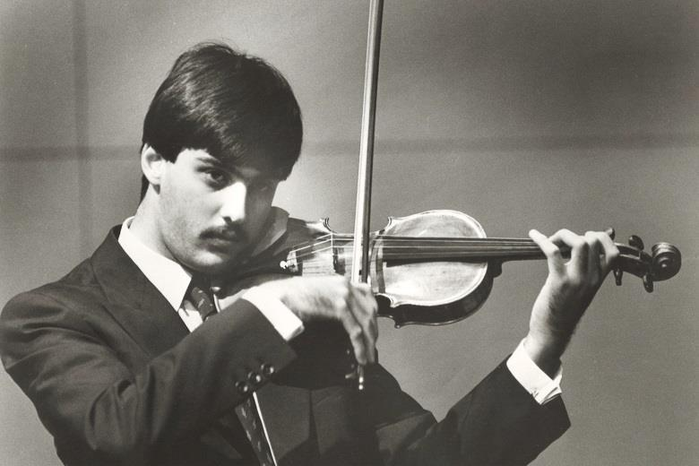

Welcome to My Violinist Tribute
This website celebrates the legacy and artistry of three of history's greatest violinists: Lisa Batiashvili, David Oistrakh, and Leonidas Kavakos. Explore to learn about these artists, their violins, and their unique styles.
Learn About My Favorite Violinists
Lisa Batiashvili
Learn more about Lisa BatiashviliDavid Oistrakh
Learn more about David Oistrakh
